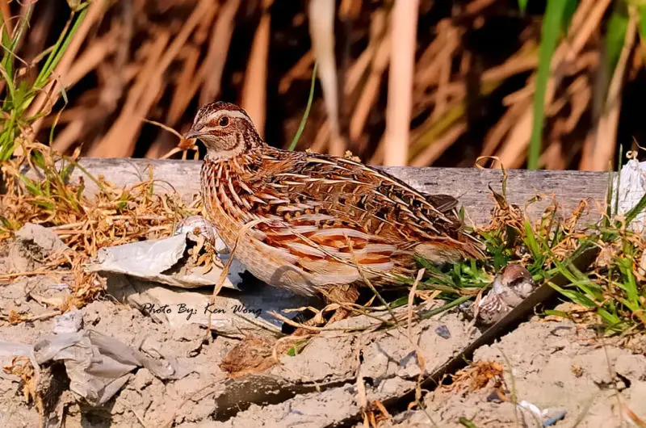
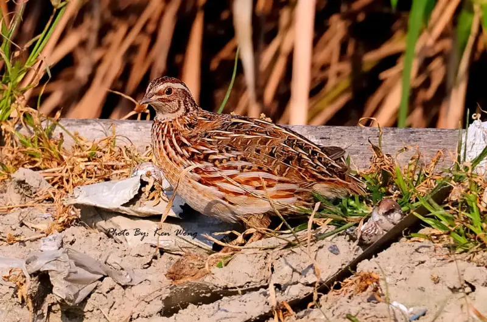

Rreth Nesh!
Website-i MiniFerems PS-Ovrea.
Website-i MiniFerems PS-Ovrea.
Pamja Si zogj, si meshkujt, ashtu edhe femrat kanë të njëjtin lloj plumage dhe ngjyrosjeje. Kokat e tyre janë me ngjyrë të njomë, me njolla të vogla të zeza që hedhin zonën sipër sqepit. Krahët dhe pjesa e pasme e zogthës janë ngjyrë kafe të zbehtë, pjesa e pasme ka edhe katër vija kafe që ecin përgjatë gjatësisë së saj. Një shirit i zbehtë ngjyrë kafe të verdhë i rrethuar nga vija më të vogla të zeza shkon poshtë majës së kokës. Të dy të rriturit meshkuj dhe femra kanë plumage kryesisht kafe. Megjithatë, shenjat në fyt dhe gji, Thjerrëzat japoneze shumohen në Azinë Lindore dhe Qendrore, në zona të tilla si Mançuria, Siberia juglindore, Japonia veriore dhe Gadishulli Korean. Megjithatë, ato janë vërejtur gjithashtu të shumohen në disa rajone të Evropës, si dhe në Turqi. Këta janë kryesisht zogj që jetojnë në tokë që kanë tendencën të qëndrojnë brenda zonave të bimësisë së dendur për t'u mbuluar dhe për t'iu shmangur predacionit. Habitatet e tyre natyrore përfshijnë fushat me bar, shkurret përgjatë brigjeve të lumenjve dhe fushat bujqësore që janë mbjellë me të mbjella
Si krahasohen me vezet e pules
Vezët e thëllëzave janë shumë më të vogla se vezët e pulës me rreth një të tretën e madhësisë së tyre. Megjithatë, për nga madhësia e tyre, vezët e thëllëzave kanë të verdha të mëdha. Duke qenë se shumë nga lëndët ushqyese në vezë gjenden në të verdhën, disa njerëz pohojnë se vezët e thëllëzave janë më të dendura me lëndë ushqyese se vezët e pulës, që do të thotë se përmbajnë më shumë lëndë ushqyese kur krahasohen me peshën. Kjo tabelë krahason sasitë e lëndëve ushqyese të zgjedhura në 100 gramë thëllëza dhe vezë pule,
Për të qenë kaq të vogla, këto vezë janë çuditërisht të pasura me lëndë ushqyese. Një vezë e vetme e thëllëzës siguron një pjesë të konsiderueshme të nevojave tuaja ditore të vitaminës B12, selenium, riboflavin dhe choline, së bashku me pak hekur — të gjitha këto në një servirje që përmban vetëm 14 kalori. Seleniumi dhe riboflavina janë lëndë ushqyese të rëndësishme që ndihmojnë trupin tuaj të prishë ushqimin që hani dhe ta transformojë atë në energji. Seleniumi ndihmon gjithashtu në sigurimin e funksionit të shëndetshëm të tiroidit (2Trusted Source, 3Trusted Source).
Benifitet
Vezët e thëllëzave janë të pasura me lëndë ushqyese dhe plot me antioksidantë që favorizojnë shëndetin që mund të ndihmojnë në përmbysjen e dëmtimit qelizor dhe trajtimin e simptomave të alergjisë (7Trusted Source). Një studim 7-ditor në 77 persona me rhinit alergjik gjeti simptoma si teshtima, ngjeshja dhe hunda runny u përmirësuan brenda 1 ore nga marrja e një antioksiduesi të vezës së thjerrëzës dhe suplementit të zinkut. Megjithatë, është e paqartë nëse vetëm komponimet e vezëve ishin përgjegjëse për përfitimet (8Trusted Source).
| Calorie 14 | Protein 1gram | Crabs 0grams |
|---|---|---|
| Fiber 0grams | Choline: 4% of the Daily Value (DV) | Folate: 2% of the DV |
| Pantothenic acid: 3% of the DV | Vitamin B12: 6% of the DV | Iron: 2% of the DV |
Thëllëza japoneze mashkullore zakonisht është më e vogël se femrat.
Gjatë migrimit të tyre, thëllëza japoneze mbulon 400-1000 km (248-621 milje) - një distancë e mahnitshme për një zog që nuk është i famshëm për aftësinë e tij fluturuese.
Thëllëza japoneze mund të shohë me ngjyra dhe perceptimi i tyre për ngjyrën është më i madh se ai i formës ose madhesis.
Thëllëzat japoneze janë gjithashtu larëse pluhuri të apasionuara dhe marrin periudha të shumta të larjes së pluhurit çdo ditë. Kur lahen nga pluhuri, ata do të mbledhin faturën dhe këmbët e tyre në të gjithë tokën për të liruar tokën, dhe pastaj do të përdorin krahët e tyre për të hedhur pluhurin në ajër. Ndërsa pluhuri bie përsëri në tokë rreth zogjve, ata do të tundin trupin e tyre dhe do t'i shqyejnë pendët e tyre për t'u siguruar që të marrin një shtresë të plotë. Kjo sjellje ndihmon në mirëmbajtjen e pendëve dhe heqjen e parazitëve.
Shumica e vezëve të thëllëzave nuk janë pasteurizuar, që do të thotë se nuk janë nxehur për të vrarë bakteret e dëmshme që mund të banojnë në guaskë. Për shkak të kësaj, gratë shtatzëna dhe njerëzit me sistem imunitar të kompromentuar duhet të shmangin vezët e thjerrëzave ose të sigurohen që ato të jenë plotësisht të gatuara pa të verdhë runny ose xhelatinoze para se t'i hanë ato. Përveç kësaj, nëse jeni alergjik ndaj vezëve të pulës, mund të jeni edhe alergjik ndaj vezëve të thëllëzave. Ju duhet të praktikoni kujdes.
Shumica e vezëve të thëllëzave nuk janë pasteurizuar, që do të thotë se nuk janë nxehur për të vrarë bakteret e dëmshme që mund të banojnë në guaskë. Për shkak të kësaj, gratë shtatzëna dhe njerëzit me sistem imunitar të kompromentuar duhet të shmangin vezët e thjerrëzave ose të sigurohen që ato të jenë plotësisht të gatuara pa të verdhë runny ose xhelatinoze para se t'i hanë ato. Përveç kësaj, nëse jeni alergjik ndaj vezëve të pulës, mund të jeni edhe alergjik ndaj vezëve të thëllëzave. Ju duhet të praktikoni kujdes.